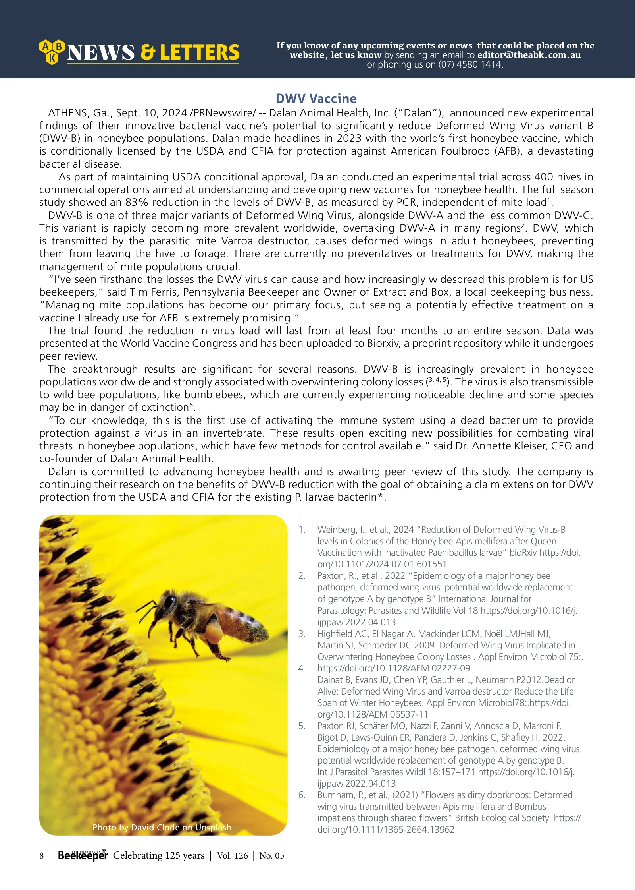

If you know of any upcoming events or news that could be placed on the
website, let us know by sending an email to editor@theabk.com.au
or phoning us on (07) 4580 1414.
NEWS & LETTERS
DWV Vaccine
ATHENS, Ga., Sept. 10, 2024 /PRNewswire/ -- Dalan Animal Health, Inc. (“Dalan”), announced new experimental
findings of their innovative bacterial vaccine’s potential to significantly reduce Deformed Wing Virus variant B
(DWV-B) in honeybee populations. Dalan made headlines in 2023 with the world’s first honeybee vaccine, which
is conditionally licensed by the USDA and CFIA for protection against American Foulbrood (AFB), a devastating
bacterial disease.
As part of maintaining USDA conditional approval, Dalan conducted an experimental trial across 400 hives in
commercial operations aimed at understanding and developing new vaccines for honeybee health. The full season
study showed an 83% reduction in the levels of DWV-B, as measured by PCR, independent of mite load1.
DWV-B is one of three major variants of Deformed Wing Virus, alongside DWV-A and the less common DWV-C.
This variant is rapidly becoming more prevalent worldwide, overtaking DWV-A in many regions2. DWV, which
is transmitted by the parasitic mite Varroa destructor, causes deformed wings in adult honeybees, preventing
them from leaving the hive to forage. There are currently no preventatives or treatments for DWV, making the
management of mite populations crucial.
“I’ve seen firsthand the losses the DWV virus can cause and how increasingly widespread this problem is for US
beekeepers,” said Tim Ferris, Pennsylvania Beekeeper and Owner of Extract and Box, a local beekeeping business.
“Managing mite populations has become our primary focus, but seeing a potentially effective treatment on a
vaccine I already use for AFB is extremely promising.”
The trial found the reduction in virus load will last from at least four months to an entire season. Data was
presented at the World Vaccine Congress and has been uploaded to Biorxiv, a preprint repository while it undergoes
peer review.
The breakthrough results are significant for several reasons. DWV-B is increasingly prevalent in honeybee
populations worldwide and strongly associated with overwintering colony losses (3, 4, 5). The virus is also transmissible
to wild bee populations, like bumblebees, which are currently experiencing noticeable decline and some species
may be in danger of extinction6.
“To our knowledge, this is the first use of activating the immune system using a dead bacterium to provide
protection against a virus in an invertebrate. These results open exciting new possibilities for combating viral
threats in honeybee populations, which have few methods for control available.” said Dr. Annette Kleiser, CEO and
co-founder of Dalan Animal Health.
Dalan is committed to advancing honeybee health and is awaiting peer review of this study. The company is
continuing their research on the benefits of DWV-B reduction with the goal of obtaining a claim extension for DWV
protection from the USDA and CFIA for the existing P. larvae bacterin*.
1.
Weinberg, I., et al., 2024 “Reduction of Deformed Wing Virus-B
levels in Colonies of the Honey bee Apis mellifera after Queen
Vaccination with inactivated Paenibacillus larvae” bioRxiv https://doi.
org/10.1101/2024.07.01.601551
2.
Paxton, R., et al., 2022 “Epidemiology of a major honey bee
pathogen, deformed wing virus: potential worldwide replacement
of genotype A by genotype B” International Journal for
Parasitology: Parasites and Wildlife Vol 18 https://doi.org/10.1016/j.
ijppaw.2022.04.013
3.
Highfield AC, El Nagar A, Mackinder LCM, Noël LMJHall MJ,
Martin SJ, Schroeder DC 2009. Deformed Wing Virus Implicated in
Overwintering Honeybee Colony Losses . Appl Environ Microbiol 75:.
4.
https://doi.org/10.1128/AEM.02227-09
Dainat B, Evans JD, Chen YP, Gauthier L, Neumann P2012.Dead or
Alive: Deformed Wing Virus and Varroa destructor Reduce the Life
Span of Winter Honeybees. Appl Environ Microbiol78:.https://doi.
org/10.1128/AEM.06537-11
5.
Paxton RJ, Schäfer MO, Nazzi F, Zanni V, Annoscia D, Marroni F,
Bigot D, Laws-Quinn ER, Panziera D, Jenkins C, Shafiey H. 2022.
Epidemiology of a major honey bee pathogen, deformed wing virus:
potential worldwide replacement of genotype A by genotype B.
Int J Parasitol Parasites Wildl 18:157–171 https://doi.org/10.1016/j.
ijppaw.2022.04.013
6.
Burnham, P., et al., (2021) “Flowers as dirty doorknobs: Deformed
wing virus transmitted between Apis mellifera and Bombus
impatiens through shared flowers” British Ecological Society https://
doi.org/10.1111/1365-2664.13962
Photo by David Clode on Unsplash
8 |
Celebrating 125 years | Vol. 126 | No. 05